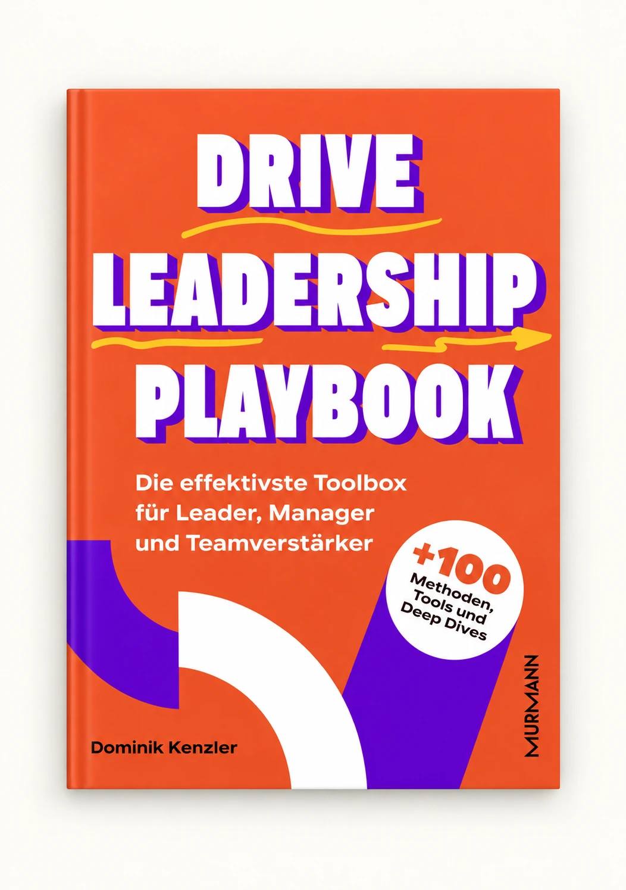

Passenden Skill finden
Wähle die Methode für deine aktuelle Führungsaufgabe und lies die Vorschau.
DAS BUCH WEITERDENKEN
Wende sie direkt in deiner KI an.

DEINE WERKZEUGE
89 Skills aus dem DRIVE Leadership Playbook. Kostenlos herunterladen und direkt anwenden.
VOM BUCH IN DEINEN ALLTAG
Wähle die Methode für deine aktuelle Führungsaufgabe und lies die Vorschau.
Lade den Skill als ZIP herunter. Entpacke ihn und gib deiner KI SKILL.md und bei Bedarf die Vorlagen mit.
Ergänze deinen Kontext. Die KI stellt Fragen und hilft beim ersten Entwurf. Du entscheidest.